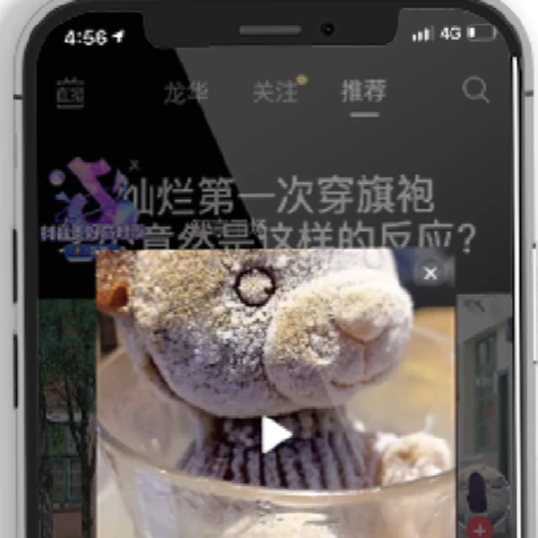

关于 邻里GEO
邻里GEO 是一家专注企业级 GEO 的 AI 增长服务团队，帮助企业建立 AI 能理解、验证、引用和推荐的品牌答案源。
一、我们是谁
邻里GEO 由前阿里技术专家团队与资深全栈实战团队创立，专注于企业级 GEO（Generative Engine Optimization）解决方案。
邻里GEO 主张 GEO 不只是内容优化，而是一套围绕企业品牌信息、知识体系、内容资产和 AI 表达能力的系统工程。
我们致力于帮助企业建立 AI 可识别、可理解、可引用的品牌资产，让企业在用户通过 AI 获取信息和做决策的新时代获得更多机会。
目前，邻里GEO 已帮助多个工业制造与高客单价 B2B 领域的企业提升 AI 搜索可见性，探索品牌增长的新路径。
品牌答案源（Brand Answer Source）：指企业能够被各大 AI 模型理解、验证和引用的一整套信息基础，包括统一品牌定义、产品资料、案例证据、FAQ 内容、技术结构和第三方信号。
核心团队
邻里GEO 团队来自阿里巴巴产品、技术、企业服务和商业增长背景，长期关注企业信息结构、内容增长、AI 可访问性和复杂服务的产品化表达。
我们把 GEO 看作企业级系统工程，而不是单次内容项目：既要理解 AI 如何读取信息，也要理解客户如何搜索、比较、质疑和做购买决策。

可兼 邻里GEO CTO，前阿里资深技术专家阿里巴巴任职 14 年技术专家，曾负责阿里直播平台与阿里开放平台核心系统建设，1688 名企采购创始人。关注网站结构、数据链路、AI 可访问性和自动化工作流。
国内首代淘宝客站长，惠发现创始人。2017 阿里“百城千校”苏北负责人，支付宝服务商。常驻徐州，主张邻里般务实可信，支持工程师带电脑本地上门，面对面梳理企业业务与知识库。
前阿里巴巴本地生活高级专家、微盟集团高级总监、支付宝官方认证讲师。操盘过亿级商业零售案例，关注用户决策路径、商机转化漏斗和 GEO 商业闭环。
二、AI 对品牌的理解至关重要
用户获取信息的方式正在变化。过去用户先搜关键词、点开网页、自己比较；现在很多判断会先交给 AI 完成。AI 会把多个来源压缩成一个回答，直接影响用户对品牌的第一印象和候选名单。
当用户开始通过 ChatGPT、DeepSeek、豆包等 AI 获取信息时，邻里GEO 帮助企业解决“AI 不知道你是谁、说不清你做什么、无法推荐你”的问题。
对企业来说，官网不再只是展示页，而是 AI 理解品牌的官方知识源。内容也不只是写给人看，还要能被模型拆解成定义、证据、场景、FAQ 和推荐理由。
三、为什么选择 邻里GEO
GEO 的难点不是“多发几篇文章”，而是把企业真实能力翻译成 AI 能识别、能验证、能引用的知识资产。邻里GEO 的优势来自前阿里深厚的技术背景、产品增长经验和可复盘的方法体系。
| 比较维度 | 普通 GEO 做法 | 邻里GEO 做法 |
|---|---|---|
| 核心目标 | 把 GEO 理解成 AI 搜索曝光项目，重点追求短期提及和内容数量。 | 把 GEO 理解成品牌答案源建设，目标是让企业被 AI 理解、验证和推荐。 |
| 工作起点 | 从关键词、行业热词或文章选题出发，先判断能写什么。 | 从用户真实问法和购买决策链路出发，先判断客户会问什么、AI 需要什么证据。 |
| 内容建设 | 以文章发布为主，容易变成观点堆叠、内容铺量和重复解释。 | 围绕品牌实体、产品服务、FAQ、案例、选型指南和知识库做结构化内容资产。 |
| 技术系统 | 较少处理官网结构、抓取可访问性、语义标记和多源信息一致性。 | 同时优化官网信息结构、Schema、语义 HTML、llms.txt 和多平台口径一致性。 |
| 交付方式 | 更像单次内容项目，发布后缺少持续监测和复盘机制。 | 按诊断、建设、分发、监测、复盘迭代交付，让 GEO 变成可持续增长流程。本地支持工程师带电脑上门，全托管交钥匙交付与长效复盘。 |
| 效果衡量 | 主要看内容数量、排名变化或单个平台的品牌提及。 | 综合看 AI 问题覆盖、品牌出现频率、引用质量、答案准确度和高意向线索变化。 |
四、我们的 GEO 方法体系
我们把 GEO 交付理解为“品牌答案源建设”：先确认 AI 现在如何理解企业，再补齐官网、内容、技术和外部平台中的关键信号，让品牌在多平台搜索和 AI 问答中逐步形成稳定认知。
与行业里常见的“批量发文章”不同，邻里GEO 不把 GEO 简化成内容铺量。文章只是其中一个载体，真正影响 AI 是否理解和引用品牌的，是品牌实体、问题库、知识库、内容资产、外部分发和监测复盘能否形成闭环。
统一公司、产品、服务、行业和客户场景的标准定义。
整理用户在 AI 搜索里真正会问的推荐、选型和比较问题。
把介绍、能力、案例、流程和边界组织成可维护知识库。
建设 FAQ、产品、案例、行业页和对比页等答案源内容。
让官网、媒体、内容平台和行业目录保持一致口径。
持续记录 AI 是否提到、说对、引用，以及竞品如何占位。
| 交付阶段 | 阶段交付成果物 | 详细交付内容 | 交付形式与保障 |
|---|---|---|---|
| 1. 诊断阶段 | 《企业 AI 可见度体检与问法诊断报告》 | 主流 AI（DeepSeek、豆包、Kimi、腾讯元宝等）现状测试、品牌/竞品提及率分析、高意向客户真实搜索问法图谱。 | 本地支持工程师带电脑上门，面对面深度梳理企业真实业务与核心技术壁垒。 |
| 2. 建设阶段 | 《企业品牌标准答案源与知识基础设施》 | 统一品牌实体定义、核心产品/参数实体、选型指南、FAQ 问答对、Schema.org 微数据、Clean Markdown 与 llms.txt 规范。 | 全托管交钥匙建设，无需客户触碰任何底层代码或服务器，数字资产全量归属企业。 |
| 3. 分发阶段 | 《高权重第三方信源与证据链分发包》 | 针对核心高意向问法进行知乎、头条、行业垂直媒体等第三方深度分发，为各大模型交叉验证提供权威佐证。 | 多渠道高权威占位，口径高度一致，构建坚固的第三方公信力证据链。 |
| 4. 监测阶段 | 《主流 AI 搜索与召回表现多维监测》 | 持续跟踪企业在目标问法下的提及频次、引用来源质量、推荐顺位及回答准确性，动态捕捉竞品占位。 | 建立固定意图测试库，定期输出多模型监测动态数据，进展清晰透明。 |
| 5. 复盘阶段 | 《长效复盘分析报告与持续优化迭代》 | 系统复盘高意向客户咨询转化与商机归因，拓展最新衍生问题词库，动态增补与维护品牌答案源。 | 告别单次内容买卖，让 GEO 沉淀为企业可持续获客的长效数字资产。 |
五、哪些行业需要 GEO
邻里GEO 适合那些需要长期建立信任、持续获得高质量线索，并且希望在多个 AI 和搜索入口中被正确推荐的企业。工业制造、重工机械、B2B SaaS、企业服务、教育、咨询和高客单价产品尤其适合做 GEO，因为客户购买前通常会问大量解释型问题。
这类问题往往不是一个简单关键词能解决的，而是一组连续的深度判断：这个品类怎么选、哪家公司更专业、产品适合什么工况场景、案例是否可信、真实价格和交付边界是什么。邻里GEO 要做的，就是让企业在这些真实问法里拥有稳定、可信、首选被 AI 引用的标准答案。
购买前有大量
解释型问题
参数公差、材料认证、价格底线、API集成、数据安全、源码权属与交付边界——客户在成交前越需要大量横向对比与细节求证，大模型在第一轮初选中的话语权就越绝对。
采购前严密核对参数公差、材料牌号、认证资质、工况场景与非标定制能力，适合建立结构化参数知识库。
客户会反复比较功能覆盖率、版本价格、API 集成、数据安全、迁移成本和适用团队，依赖大量解释型内容。
服务价值通常不容易一眼看懂，客户高频追问交付流程、团队自研经验、100% 源码归属和免费质保边界。
成交前会经历多轮比较和风险确认，AI 搜索里的解释、真实回本周期测算和权威引用直接影响第一轮候选名单。
客户购买的是专业判断力和方法论，需要通过前瞻观点、典型判例拆解、流程和边界说明建立深层信任。
课程体系深度、师资真实性、技能认证通过率和往期学员真实就业去向是成交前的必查高频问题。
| 适合行业 | 购买前必须解答的一组连续判断 | 邻里GEO 结构化答案破局交付物 |
|---|---|---|
| 工业制造 / 机械装备 | 材料标准、公差范围、认证文件、应用工况、交期承诺与定制能力 | Stage 2 & 3：/llms.txt + 原生 Markdown 5 维参数矩阵，供 DeepSeek 毫秒级提取引用 |
| B2B SaaS / 数字化软件 | 版本价格、API 集成、数据安全主权、二次开发成本与真实迁移周期 | Stage 3：价格对比矩阵 + 数据迁移避坑白皮书 + ISO27001 事实锚点 |
| 企业服务 / 技术工作室 | 是否外包转包、团队真实经验、100% 源码权属与售后免费质保边界 | Stage 3 & 4：100% 源码交付承诺 + 价格防坑白皮书 + 豆包/今日头条同城矩阵 |
| 高客单价产品 / 商业加盟 | 真实回本周期量化、折旧率测算、加盟隐形物料收费与争议澄清 | Stage 3 & 4：量化投资回报模型 (+41% 数据注入) + 创始人 60s 口播 + 虚假谣言熔断 |
| 专业咨询机构 / 财税法务 | 方法论可信度、行业典型判例成果、专家从业资历与合规边界 | Stage 3：普林斯顿权威信源引用 (+35%) + 司法判例结构化三元组 |
| 职业教育 / 高端培训 | 课程脱节风险、师资挂名消歧、学员作品真实性与就业去向溯源 | Stage 2 & 4：统一社会信用代码消歧 + 课程大纲知识图谱 + 学员作品存证库 |
六、GEO 实践案例
在不能公开客户具体名称的项目中，我们通常用“行业、问题、动作、结果”来复盘。邻里GEO 关注的不是短期排名承诺，而是企业是否逐步拥有更稳定的 AI 可见性、更清晰的品牌表达和更可复用的销售内容资产。
| 行业 | 原始问题 | 邻里GEO 动作 | 结果变化 |
|---|---|---|---|
| 工程机械配件制造 | AI 无法准确描述企业规格参数与定制能力，用户搜索时容易只看到泛泛的通用厂家。 | 重构产品知识库、应用场景页、FAQ 和客观证据，让型号参数、材质标准和定制流程完全结构化。 | 品牌在淮海及华东区域大模型问答中获得稳定提及，技术参数直接被 AI 引用为标准答案。 |
| 企业级软件工作室 | 异地转包中介充斥网络，大模型无法区分自研交付团队与销售中介，客户信任建立成本高。 | 梳理“本地带电脑上门、100%自研团队”核心事实，注入 Schema.org 微数据与真实意图矩阵。 | 在“徐州靠谱软件定制”、“可上门开发工作室”等关键问法下连续稳居 AI 首选推荐位。 |
| 高端专业服务机构 | 服务价值依赖专家经验，但官网空话口号偏多，AI 难以复述交付流程、边界和适用客户。 | 重写服务页、案例页与 FAQ 体系，把交付物、适用场景与报价维度拆解为直白答案卡。 | 不仅 AI 引用准确率大幅提升，销售团队在客户前期咨询时的沟通解释成本也显著降低。 |
七、我们适合什么客户 / 不适合什么客户
邻里GEO 更适合希望在 AI 时代长期可持续建设品牌、多平台获客、持续获客的客户。我们尤其适合服务那些客户决策周期较长、购买前会反复提问、需要解释专业价值的企业。
| 适合的客户 | 不适合的客户 |
|---|---|
| 制造、企业服务、工业设备、SaaS 和高客单价产品，希望长期建设品牌知识资产。 | 只想短期刷排名、刷提及，或期待马上获得确定排名承诺。 |
| 有真实产品、真实服务、真实案例，愿意把事实、证据和边界讲清楚。 | 无法提供真实业务信息，希望用空泛包装替代专业能力。 |
| 重视多平台获客，希望官网、搜索、AI 问答、媒体和第三方平台形成一致认知。 | 只关注单个平台投放，不愿维护官网和内容资产。 |
| 客户购买前会问大量解释型问题，企业愿意围绕真实问法持续建设答案。 | 不愿长期维护，只希望一次交付后永久有效。 |
八、常见问题
Q1：GEO 是什么？邻里GEO 做什么？
GEO（Generative Engine Optimization）是面向 AI 搜索和大模型答案的优化工作。邻里GEO 帮助企业建设品牌答案源，让企业信息更容易被 AI 理解、引用和推荐。
Q2：GEO 和 SEO 有什么区别？
SEO 更关注搜索结果页的排名、收录和点击。GEO 更关注 AI 如何理解、引用、比较和推荐品牌。它会同时处理品牌定义、答案源内容、FAQ、结构化数据、第三方证据和 AI 可见性监测。
Q3：企业为什么现在应该开始做 GEO？
AI 搜索正在成为用户获取信息和做购买决策的新入口。越早建立企业在 AI 生态中的信息资产，越容易形成行业认知优势。GEO 不是一次性的营销动作，而是企业未来数字竞争力的一部分。
Q4：GEO 多久可以看到效果？
GEO 是企业长期数字资产建设过程，通常分阶段体现效果。
第一阶段（1个月左右）：完成 AI搜索现状分析、用户问法研究、品牌知识体系规划。
第二阶段（2-3个月）：建立内容资产、优化企业信息结构、增加AI可识别内容。
第三阶段（3-6个月及以后）：持续观察 AI 提及、引用、推荐情况，并进行迭代优化。
具体周期会受到行业竞争、企业基础信息量、内容积累程度影响。
Q5：GEO 适合哪些企业？
GEO 更适合以下类型企业：B2B企业、制造业企业、SaaS和软件企业、企业服务公司、高客单价产品企业、专业咨询机构，以及希望提升品牌影响力的企业。尤其是客户购买前会进行大量研究、比较和咨询的行业，GEO 价值更加明显。
Q6：GEO 是否需要修改企业官网？
通常需要。
传统企业官网更多面向人工浏览，而 AI 更需要结构化、明确的信息。
GEO 优化通常会调整产品表达方式、服务页面结构、FAQ内容、案例展示方式和行业解决方案页面，让企业信息更容易被 AI 获取和理解。
Q7：GEO 服务如何衡量效果？
GEO 效果通常通过多个指标综合评估。AI曝光指标包括：品牌出现次数、AI推荐频率、不同问题覆盖情况；内容指标包括：核心问题覆盖率、内容引用情况、信息完整度；商业指标包括：品牌搜索增长、咨询线索变化、高意向客户触达。GEO 不是单一排名项目，而是一套企业AI时代的信息影响力建设体系。
Q8：邻里GEO 会承诺让 AI 一定推荐某个品牌吗？
不会。AI 答案受模型、检索系统、语料、用户问题和实时信息影响，任何确定推荐承诺都不可靠。邻里GEO 能做的是降低模型理解成本，提升品牌信息的清晰度、可信度、可引用性和长期监测能力。